СССР и Египет:
от первых контактов до геополитического разрыва
История отношений между Советским Союзом и Египтом — это история взлётов и падений: от идеологической неприязни в 1920-е годы до дипломатического признания (1943), пика сотрудничества в эпоху Насера (1955–1970), строительства Асуанской плотины и, наконец, до охлаждения и разрыва при Садате (1972–1976).

1920-е – 1930-е: идеологическое противостояние
После Октябрьской революции 1917 года Советская Россия воспринималась египетской монархией и британскими властями как угроза. Египет (формально независимый с 1922 года, но фактически под британским контролем) не спешил устанавливать отношения с «центром мировой революции». Коминтерн, в свою очередь, видел в Египте объект антиимпериалистической борьбы, но реальных рычагов влияния не имел. В 1920-е – 1930-е годы контакты были эпизодическими и в основном через Коммунистическую партию Египта (В январе 1923 Александрийская секция Социалистической партии Египта (основана в 1921 году) во главе с Хусни Аль-Ораби в ходе проведенного ею в окрестностях Александрии съезда провозгласила себя Египетской коммунистической партией), которая находилась в глубоком подполье и подвергалась репрессиям.

1943: установление дипломатических отношений
Перелом наступил во время Второй мировой войны. В 1943 году, в условиях борьбы с нацистской Германией, СССР и Египет (формально нейтральный до 1945 года) установили дипломатические отношения. Это было прагматичное решение: Москва стремилась расширить своё присутствие на Ближнем Востоке, а Каир искал противовес британскому доминированию. 26 августа 1943 года было подписано соглашение об обмене дипломатическими миссиями — с этого момента начинается официальная история двусторонних отношений.

Революция 1952 года и поворот к СССР
После свержения монархии «свободными офицерами» во главе с Нагибом и Насером Египет начал искать альтернативу западному влиянию. Отказ США и Великобритании финансировать Асуанскую плотину стал решающим моментом. СССР предложил более выгодные условия, и в 1955 году через Чехословакию был заключён первый крупный военный контракт — поставки МиГ-15, танков Т-34, артиллерии. Это стало началом системного военно-технического сотрудничества. 23 июня 1956 года Гамаль Абдель Насер был избран президентом Египта. В мае 1964-го во время официального визита Хрущева в Объединенную Арабскую Республику, объединявшую тогда нынешние Египет, Сирию и отчасти Ирак, Насер наградил советского лидера орденом Нила.

Суэцкий кризис 1956 года
Национализация Суэцкого канала привела к тройственной агрессии (Англия, Франция, Израиль). СССР выступил с ультиматумом, пригрозив ракетными ударами по Парижу и Лондону. Это остановило интервенцию и сделало СССР главным защитником арабского мира. Престиж Насера достиг пика, а советско-египетские отношения перешли в фазу стратегического союза.

Асуанская плотина — главный символ сотрудничества
Строительство Асуанской высотной плотины (1960–1970) стало крупнейшим советским инфраструктурным проектом за рубежом. СССР предоставил кредиты на сумму более 1 млрд рублей, поставил оборудование, направил свыше 2000 инженеров и рабочих. Плотина позволила регулировать сток Нила, предотвратить наводнения, оросить миллионы гектаров и дала стране электроэнергию. 12 советских специалистов получили звание Героя Социалистического Труда. Это был пик советско-египетской дружбы.

Военное сотрудничество (1955–1972)
СССР поставил Египту более 500 самолётов (МиГ-17, МиГ-19, МиГ-21, Ту-16), 1200 танков (Т-34, Т-54, Т-55), ракетные катера, системы ПВО (С-75). Советские военные советники участвовали в подготовке египетской армии. После поражения в Шестидневной войне (1967) СССР экстренно восстановил вооружённые силы Египта, отправив эскадру кораблей и зенитные ракетные дивизионы. В 1970 году в Египте находилось около 20 000 советских военных специалистов.

Экономическое и культурное влияние
СССР помог построить Хелуанский металлургический комбинат (стал основой египетской чёрной металлургии), Асуанскую плотину, ряд энергетических объектов. Тысячи египетских студентов учились в советских вузах. В Каире и Александрии работали культурные центры. Это сформировало целое поколение египетской интеллигенции, ориентированной на советскую модель.

1971: Договор о дружбе и сотрудничестве
После смерти Насера (28 сентября 1970) новый президент Анвар Садат сначала продолжил курс на сотрудничество с Москвой. 27 мая 1971 года в Каире был подписан «Договор о дружбе и сотрудничестве между СССР и Египтом» сроком на 15 лет. Документ предусматривал консультации при возникновении угрозы миру, развитие экономических связей и военное сотрудничество. Однако уже в 1972 году Садат, недовольный тем, что СССР не даёт наступательного оружия для войны с Израилем, выслал 20 000 советских военных специалистов. Это стало первым серьёзным ударом по отношениям.

Война Судного дня (1973)
Несмотря на высылку советников, СССР продолжал поставлять оружие. В октябре 1973 года Египет и Сирия начали войну против Израиля. Советское оружие (ПВО, танки, ракеты) сыграло ключевую роль. СССР использовал море и воздух для снабжения, а также направил военных специалистов (уже неофициально). Однако после войны Садат начал открыто сближаться с США, что вызвало недовольство Москвы.

1976: денонсация договора и разрыв
В марте 1976 года Садат в одностороннем порядке денонсировал Договор о дружбе с СССР, запретил заход советских кораблей в египетские порты и аннулировал соглашение о военном сотрудничестве. Это был финал советско-египетского союза. В 1977 году Садат посетил Иерусалим, а в 1979 году Египет подписал Кэмп-Дэвидские соглашения с Израилем, окончательно переориентировавшись на США. СССР разорвал дипломатические отношения (восстановлены только в 1984 году, уже после смерти Садата).


СССР и Израиль:
от признания до разрыва и примирения
История советско-израильских отношений парадоксальна: СССР был в числе первых государств, признавших Израиль в 1948 году, — и сам же разорвал с ним дипломатические отношения в 1967-м. Холодная война превратила еврейское государство в главного противника советской политики на Ближнем Востоке.
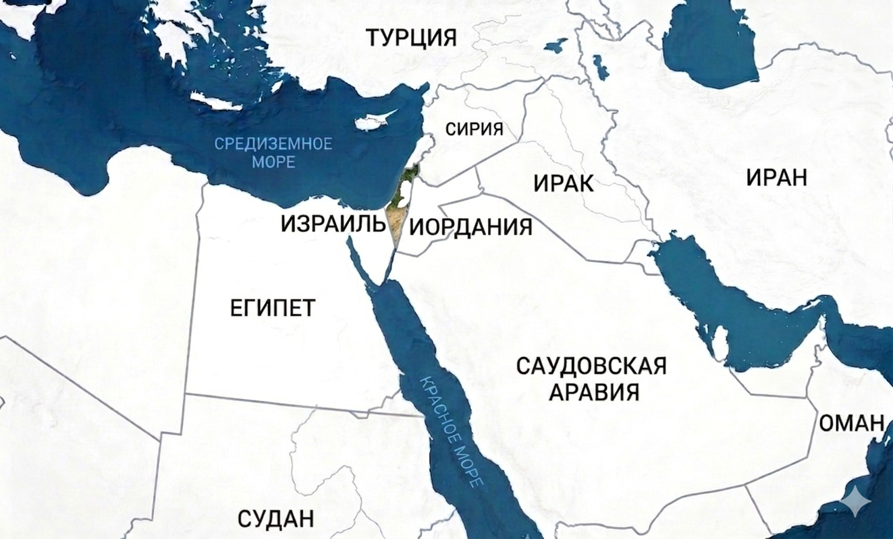
1947–1948: СССР голосует «за»
На заседании Генеральной Ассамблеи ООН 29 ноября 1947 года советский представитель Андрей Громыко проголосовал за план раздела Палестины — вместе с США и против позиции арабских стран. 17 мая 1948 года, всего через три дня после провозглашения независимости, СССР признал Израиль де-юре — первым государством в мире. Причина: Москва рассчитывала, что социалистические корни Израиля (многие основатели государства вышли из европейских левых движений) приведут страну в советскую орбиту.
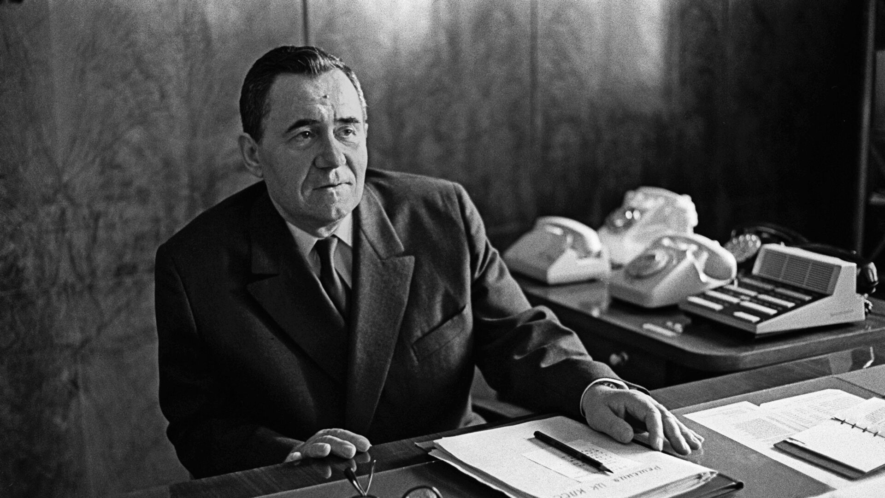
Голда Меир в Москве
Первым послом Израиля в СССР стала Голда Меир — будущий премьер-министр страны. Её приезд в сентябре 1948 года вызвал массовое стихийное ликование московских евреев у синагоги на Архипова: тысячи людей пришли приветствовать дипломата. Это встревожило Сталина. Уже в 1949 году начались репрессии по «делу Еврейского антифашистского комитета», а в 1953-м — «дело врачей».
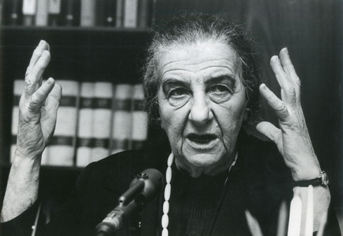
Прозападный курс Израиля
После смерти Сталина советско-израильские отношения нормализовались на поверхности, но стратегически разошлись. Израиль вступил в американскую зону влияния: получал финансовую помощь США, оружие от Франции и ФРГ. Суэцкий кризис 1956 года стал водоразделом: Израиль выступил союзником Великобритании и Франции в агрессии против Египта, тогда как СССР защищал Насера. Советский ультиматум вынудил израильские войска уйти с Синая. С тех пор Израиль прочно вошёл в советский нарратив как «орудие западного империализма» на Ближнем Востоке.
1967: Шестидневная война и разрыв
5–10 июня 1967 года Израиль нанёс молниеносный удар по Египту, Сирии и Иордании, захватив Синайский полуостров, Голанские высоты, Западный берег реки Иордан и Восточный Иерусалим. СССР, вооружавший арабских союзников, потерпел политическое поражение. 10 июня 1967 года Советский Союз разорвал дипломатические отношения с Израилем — вслед за большинством соцстран. Израильским дипломатам предъявили требование покинуть страну в течение нескольких дней.
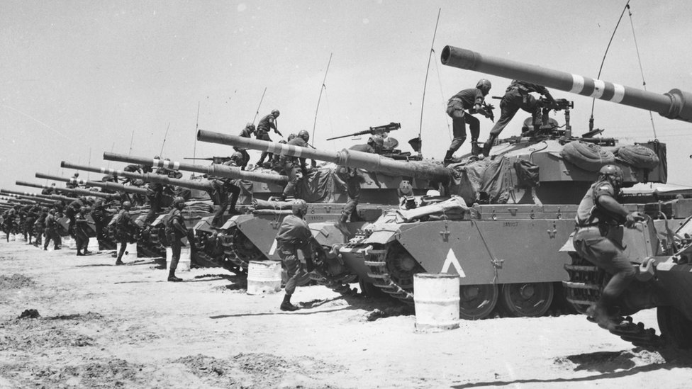
«Война на истощение» и советские советники
С 1969 по 1970 год СССР направил в Египет зенитные ракетные дивизионы и лётчиков для прикрытия Суэцкого канала от израильских налётов. Советские пилоты на МиГ-21 напрямую вступали в воздушные бои с израильскими «Фантомами» — это был редчайший случай прямого военного столкновения советских и израильских военных в ходе холодной войны.
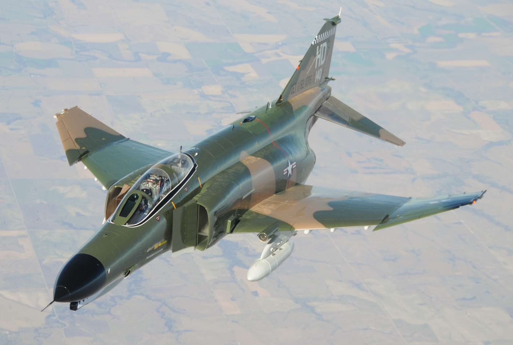
Алия из СССР
Один из ключевых факторов советско-израильских отношений — эмиграция советских евреев («алия»). В 1970-е годы СССР под давлением США и еврейских организаций позволил части евреев выехать: в 1971–1979 годах Израиль принял около 163 000 репатриантов из СССР. В 1980-е поток иссяк, но с началом перестройки вновь нарастал: в 1990 году из СССР уехало уже более 185 000 человек. «Отказники» — евреи, которым отказывали в выезде, — стали символом советских нарушений прав человека на Западе.
1991: Восстановление отношений
18 октября 1991 года — за два месяца до распада СССР — Советский Союз и Израиль восстановили дипломатические отношения. Это стало возможным на фоне общей нормализации советской внешней политики при Горбачёве. Россия унаследовала отношения, и в 1990-е — 2000-е годы они стали одними из наиболее тесных в регионе, прежде всего благодаря массовой русскоязычной общине в Израиле.
СССР и Палестина:
главный покровитель ООП
Советский Союз был ключевым международным спонсором палестинского национально-освободительного движения. Москва вооружала, обучала и дипломатически защищала ООП — Организацию освобождения Палестины — на протяжении почти трёх десятилетий.
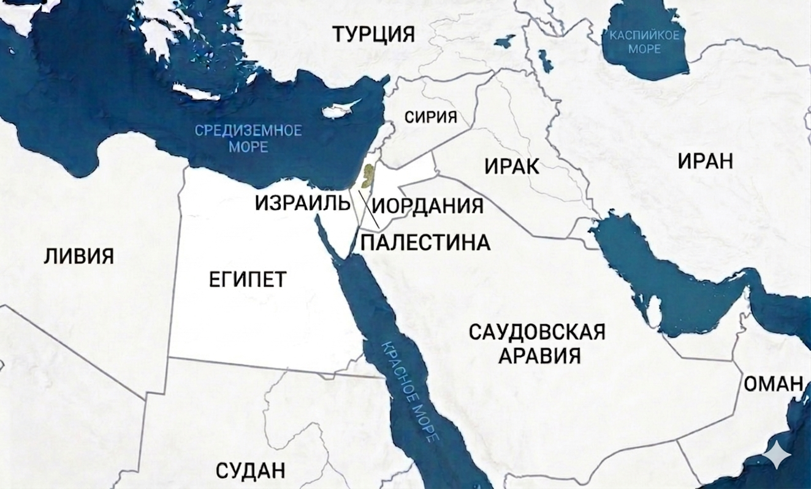
1947–1964: двойственная позиция
В 1947 году СССР поддержал план раздела Палестины на арабское и еврейское государства. После войны 1948–1949 годов и создания Израиля палестинский вопрос на время отошёл на второй план советской политики: Москва была занята выстраиванием отношений с Египтом, Сирией и Ираком. Организация освобождения Палестины (ООП) была создана в 1964 году. Поначалу СССР относился к ней настороженно — ввиду её националистического, а не марксистского характера. Контакты были минимальными вплоть до 1967 года.
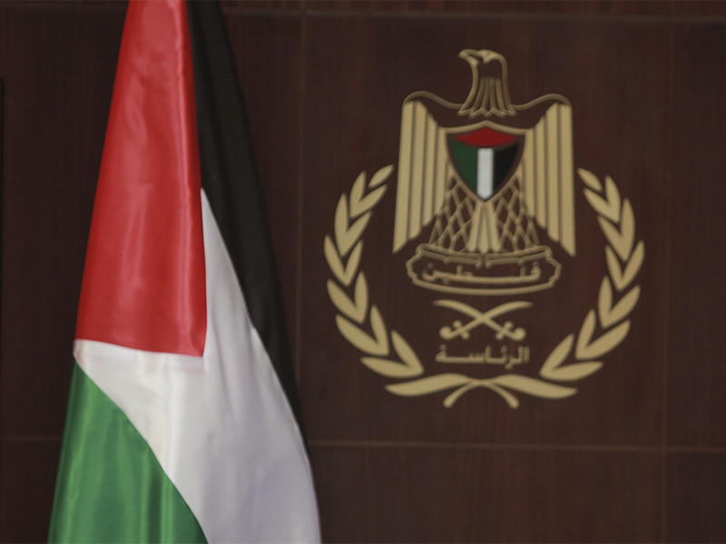
Арафат и Москва
После Шестидневной войны 1967 года и превращения ООП в реальную военно-политическую силу советско-палестинские отношения резко активизировались. Ясир Арафат впервые посетил Москву в 1968 году. СССР стал главным поставщиком оружия для палестинских формирований (ФАТХ, НФОП): автоматы Калашникова, РПГ, миномёты, противотанковые ракеты. В 1974 году Советский Союз официально признал ООП «единственным законным представителем палестинского народа» и предоставил ей статус наблюдателя при ООН — одновременно с аналогичным решением ГА ООН.
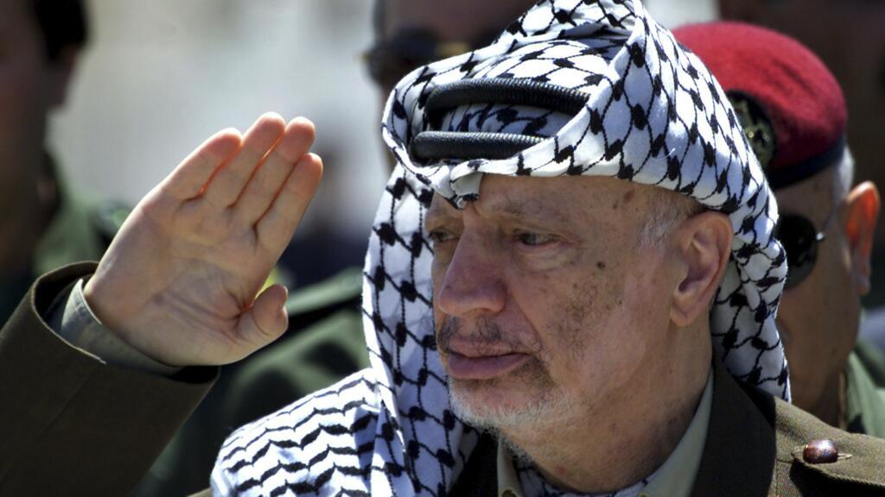
Вооружение и подготовка бойцов
СССР поставлял оружие ООП преимущественно через Сирию и Ливию, избегая прямых поставок (это позволяло сохранять дипломатическую гибкость). Советские и восточноевропейские военные инструкторы обучали бойцов ФАТХ и НФОП в лагерях в Ливане, Сирии, Южном Йемене. По различным оценкам, через советские военные учебные заведения прошли сотни офицеров ООП. Обучение включало тактику партизанской войны, работу с тяжёлым вооружением и разведывательную подготовку.
Образование и дипломатия
Советский Союз принимал палестинских студентов в своих университетах. Тысячи молодых палестинцев получили образование в СССР — особенно в технических и медицинских вузах. Советское правительство также финансировало «Палестинскую академию науки» и поддерживало издание арабоязычной литературы. В 1981 году ООП открыла в Москве своё постоянное представительство со статусом, приближённым к посольскому.
Дилеммы Москвы
Советская поддержка ООП действительно сталкивалась с временными сложностями, которые диктовались реалиями холодной войны. Один из таких моментов пришёлся на начало 1980-х, когда руководство ООП предприняло самостоятельные шаги к диалогу с западными странами, в том числе с США. Москва, вложившая в палестинское движение значительный политический и моральный капитал, восприняла это как нарушение согласованной линии. В ответ советское руководство на время сократило прямые контакты с Арафатом и сделало ставку на более лояльные фракции внутри ООП. Это был тактический манёвр, а не полный разрыв: СССР не прекращал поддержку палестинской борьбы в целом. К середине 1980-х годов стороны восстановили взаимопонимание, убедившись, что координация приносит больше пользы, чем изолированные действия. Этот эпизод показывает рабочие противоречия в рамках союзнических отношений — без демонизации, но и без утверждений о безоговорочной правоте каждой из сторон.
1988: Признание государства Палестина
15 ноября 1988 года Палестинский национальный совет в Алжире провозгласил независимость Государства Палестина. СССР стал одним из первых государств, признавших его де-юре. Это произошло ещё при Горбачёве, который одновременно взял курс на нормализацию с Израилем — характерное противоречие позднесоветской внешней политики.
Итоги советского покровительства
Советская поддержка позволила ООП выжить как политической организации и добиться международного признания. Вместе с тем зависимость от СССР имела обратную сторону: распад Советского Союза в 1991 году лишил ООП главного дипломатического покровителя и вынудил Арафата идти на прямые переговоры с Израилем — что в итоге привело к соглашениям в Осло (1993).
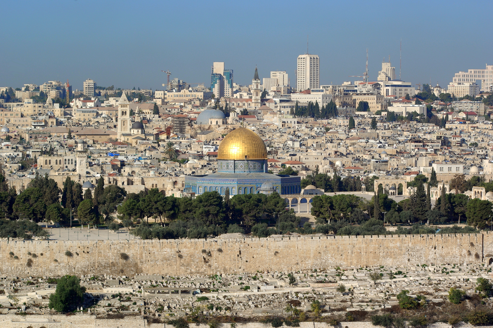
СССР и Сирия:
арабский форпост Москвы
Сирия стала самым долговременным и надёжным союзником СССР на Ближнем Востоке. В отличие от Египта, Дамаск не разорвал отношения с Москвой — даже в самые тяжёлые годы перестройки. Советская военная и экономическая помощь сделали Сирию одной из ключевых стран региона

1944–1954: первые шаги
Дипломатические отношения установлены в 1944 году, ещё при французском мандате. Москва поддержала независимость Сирии (1946), что создало кредит доверия. В 1949–1954 годах, при прозападном режиме Шишакли, контакты заморозились, но после его свержения в 1954 году началось сближение.

1956–1970: от Суэца до Шестидневной войны
После Суэцкого кризиса 1956 года Сирия стала одним из главных арабских партнёров СССР. В 1958–1961 годах входила в ОАР вместе с Египтом. После поражения в Шестидневной войне (1967) СССР экстренно перевооружил сирийскую армию, потерявшую Голанские высоты.

Хафез Асад (1970–2000): архитектор советско-сирийского союза
Придя к власти в ноябре 1970 года, Хафез Асад сделал ставку на СССР как на главного военно-политического партнёра. В 1971 году Советский Союз получил пункт материально-технического обеспечения ВМФ в Тартусе — единственную советскую базу в Средиземном море. Асад лично встречался с Брежневым, Подгорным и Косыгиным. Именно при нём были подписаны все ключевые соглашения.

Решающая роль СССР
6 октября 1973 года Сирия совместно с Египтом атаковала Израиль. Сирийская армия была оснащена советскими танками Т-54/Т-55, МиГ-21, ПВО С-75. Когда Израиль начал контрнаступление, СССР организовал массированный «воздушный мост» — более 900 самолёто-вылетов с оружием и боеприпасами. Это спасло Дамаск от военного разгрома.

Итоги для Сирии
Сирия не вернула Голанские высоты, но нанесла серьёзные потери израильской армии. Престиж Асада и СССР в арабском мире вырос. После войны Москва списала Сирии значительную часть военных долгов и начала новые поставки оружия.

Сирия против Израиля в небе над Ливаном
В июне 1982 года Израиль вторгся в Ливан, чтобы разгромить базы ООП (Организация Освобождения Палестины). Сирийские войска, находившиеся в Ливане, вступили в бои. СССР не стал воевать напрямую, но резко нарастил военную помощь Сирии, поставляв туда много современного вооружения. Советские военные советники участвовали в планировании операций ПВО.

Воздушные бои и потери
Израильская авиация нанесла тяжёлый урон сирийским ПВО в долине Бекаа (уничтожено около 18 батарей ЗРК). Однако сирийские лётчики на МиГ-23 и МиГ-21 сбили по разным данным от 30 до 60 израильских самолётов (данные разнятся). СССР немедленно восполнил потери, поставив новые ракеты и комплексы. Это был самый интенсивный советско-израильский прокси-конфликт холодной войны.
Политические последствия
Несмотря на тактическое поражение, Сирия сохранила влияние в Ливане. СССР продемонстрировал готовность защищать союзника. В 1983 году советско-сирийское военное сотрудничество достигло пика: в Сирии находилось около 8 000 советских военных специалистов.
ПМТО ВМФ СССР в Тартусе
В 1971 году СССР создал в Тартусе пункт материально-технического обеспечения (ПМТО). Строительство вели советские военные инженеры, были оборудованы причалы, ремонтные мастерские, склады топлива и казармы. База обеспечивала постоянное присутствие кораблей 5-й Средиземноморской эскадры, позволяла контролировать морские пути и быстро реагировать на кризисы (например, война Судного дня 1973 года). После распада СССР база сохранилась и стала ключевым активом России в регионе.

Евфратская плотина
В 1968—1973-х годах СССР помог Сирии построить ГЭС «Эт-Табка» Евфрате. Советские специалисты участвовали в проектировании, поставили турбины и генераторы. Плотина увеличила орошаемые земли на 150 000 гектаров, обеспечила страну электроэнергией и позволила регулировать сток реки. Это был один из крупнейших советских инфраструктурных проектов на Ближнем Востоке после Асуанской плотины.

Космический полёт Мухаммеда Фариса
30 июля 1985 года Фарис вылетел в космос в качестве космонавта-исследователя на борту космического корабля «Союз ТМ-3», 22 июля 1987 года в составе первого экипажа, посетившего орбитальную космическую станцию «Мир». Фарису приписывают доставку первого зарегистрированного образца земной пыли в космос — это был флакон с почвой из Дамаска. Фарис был удостоен звания Героя Советского Союза 30 июля 1987 года; он также был награжден орденом Ленина.

Танкоремонтный завод в Хомсе
В 1970-е годы СССР построил в Хомсе крупный танкоремонтный завод. Это предприятие стало главной ремонтной базой для сирийской бронетехники — танков Т-54, Т-55, Т-62 и БМП. Завод позволял поддерживать боеспособность армии в условиях постоянных конфликтов. Настолько важным был этот объект, что в 2015 году его восстанавливали при участии России для нужд сирийской армии.

В отличие от Египта не денонсировался
8 октября 1980 года в Москве был подписан Договор о дружбе и сотрудничестве между СССР и Сирией сроком на 20 лет. Он предусматривал взаимные консультации при угрозе миру, военную помощь в случае агрессии и развитие экономических связей. Сирия никогда не денонсировала этот договор — он формально действовал до распада СССР и был пролонгирован Россией.


СССР и Ирак:
от сотрудничества к разрыву
История отношений СССР и Ирака — это пример того, как стратегическое партнёрство может рухнуть за несколько лет. С 1958 года Москва и Багдад развивали экономические и военные связи, достигли пика в 1970-е, но вторжение Ирака в Кувейт и поддержка СССР санкций ООН поставили крест на многолетнем сотрудничестве.

Первые контакты и разрыв
Дипломатические отношения между СССР и Королевством Ирак были установлены 9 сентября 1944 года. Однако из-за пробританской ориентации монархии они носили формальный характер. В 1955 году Ирак вступил в прозападный Багдадский пакт (военно-политическая группировка на Ближнем и Среднем Востоке, созданная по инициативе Великобритании, США и Турции и существовавшая в 1955—1979 годах. Также известный, как СЕНТО), что привело к разрыву отношений с Москвой.

Революция 1958 года — новый старт
14 июля 1958 года в Ираке свергли монархию. Новое правительство во главе с Абдель Керимом Касемом вышло из прозападных блоков. СССР немедленно признал республику, и отношения были восстановлены в июле того же года. 16 марта 1959 года подписано первое соглашение об экономическом и техническом сотрудничестве — начался период активного сближения.

1972: Договор о дружбе и сотрудничестве
В феврале 1972 года Москву посетил Саддам Хусейн, тогда вице-президент Ирака. Результатом визита и ответного визита Алексея Косыгина в Багдад стало подписание 9 апреля 1972 года Договора о дружбе и сотрудничестве сроком на 15 лет. Документ закрепил стратегическое партнёрство: СССР получил надёжного союзника в регионе, а Ирак — мощную поддержку в развитии экономики и обороны. Опираясь на советскую поддержку, Ирак национализировал нефтяную промышленность.

Нефть
СССР помог Ираку освоить огромное нефтяное месторождение Северная Румейла (крупнейшее нефтяное месторождение Ближнего Востока на тот момент). Ввод в действие Северной Румейлы состоялся 19 апреля 1972 года. В 1972 году добыча нефти на Северной Румейле составила 5 млн. тонн, а через три года – уже 42 млн тонн.

Военно-техническое сотрудничество
В 1958–1990 годах Ирак был одним из крупнейших импортёров советского оружия. До 80% вооружения иракской армии было советским. СССР построил в Ираке множество военных заводов и передал более 60 лицензий на производство оружия. Помимо прямой поставки техники СССР обучал иракских офицеров и специалистов, советские предприятия выполняли ремонт поставленной спецтехники..
Иракская медецина
Саддаму Хусейну удалось при помощи СССР создать фармацевтическую промышленность и неплохую медицинскую систему. Строительство фармацевтического завода в Самарре (город в Ираке, не Самара) было задумано в 1959 году, а завершилось толко в 1970 году. После окончания строительства предприятие в Самарре вошло в состав Государственной фармацевтической компании (State company for drugs industries), которая, в свою очередь, была подчинена Министерству промышленности страны. Фабрика производила более 350 видов лекарств, среди них антибиотики, болеутоляющие, сиропы против простуды, а также различные виды медицинского оборудования.
В 1980 году началась кровопролитная война между Ираком и Ираном. СССР оказался в сложном положении: с одной стороны, Ирак был союзником по договору, с другой — Москва не хотела полного разгрома Ирана и укрепления там проамериканских сил. СССР официально объявил нейтралитет, но продолжал поставки оружия в Ирак, так как эта страна оставалась крупнейшим покупателем советского вооружения. Однако Москва сдерживала активность Багдада, что привело к первому охлаждению в отношениях.

Конфликт с Кувейтом
После изнурительной войны с Ираном экономика Ирака оказалась в упадке, а внешний долг превышал $60 млрд. Саддам Хусейн обвинил Кувейт в превышении квот на добычу нефти, что обрушило цены, и в «краже» нефти из пограничных месторождений. 2 августа 1990 года иракские войска вошли в Кувейт, что вызвало резкое осуждение на Западе.

Позиция СССР: санкции вместо поддержки
СССР, стремившийся улучшить отношения с Западом и нуждавшийся в экономической помощи, поддержал резолюции ООН о санкциях против Ирака. Это решение стало поворотным моментом. Ирак воспринял это как предательство. После войны 1991 года сотрудничество фактически прекратилось, а эмбарго ООН на поставки оружия действовало до 2004 года.


СССР и Саудовская Аравия:
непримиримые идеологические противники
Саудовская Аравия и СССР были антиподами холодной войны на Ближнем Востоке: теократическая монархия с крупнейшими нефтяными запасами против атеистической социалистической державы. Дипломатических отношений между ними не существовало 52 года — с 1938 по 1990 год.
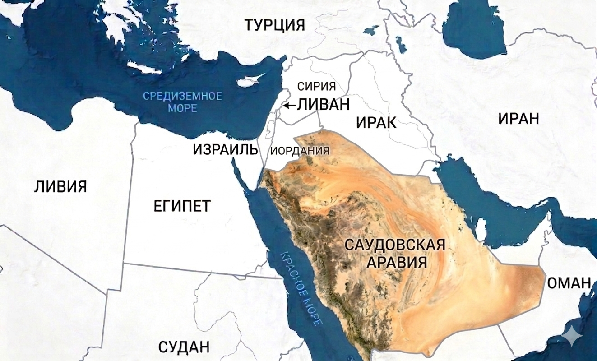
1926: Первое признание
В феврале 1926 года Советский Союз первым из великих держав признал власть Ибн Сауда над Хиджазом (западная часть Аравийского полуострова). Москва хотела ослабить британское влияние в регионе. В 1932 году было образовано Королевство Саудовская Аравия; дипломатические отношения сохранялись. Однако репрессии против советских мусульман и антирелигиозная советская политика вызывали раздражение Эр-Рияда.
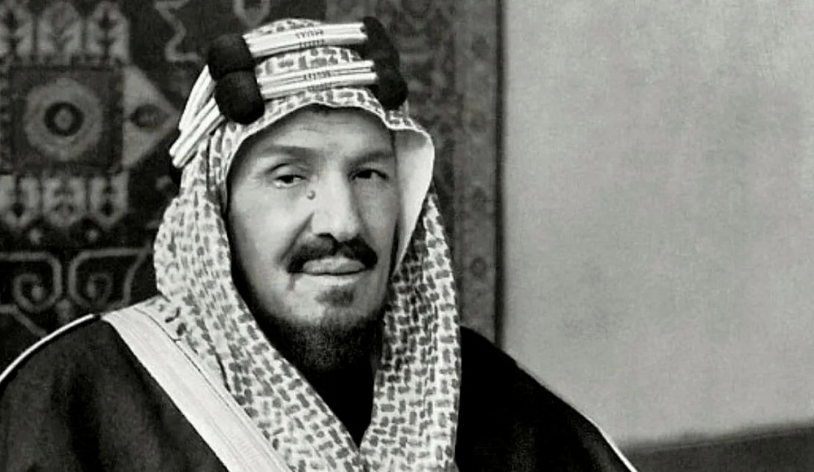
1938: Разрыв на полвека
В 1938 году — после обнаружения нефти и подписания соглашений с американскими компаниями — Саудовская Аравия окончательно вошла в американскую орбиту. В том же году дипломатические отношения с СССР были разорваны. Причины: советские антирелигиозные кампании, принципиальная несовместимость монархии и социализма, нарастающая американская опека. Отношения оставались разорванными более пятидесяти лет.
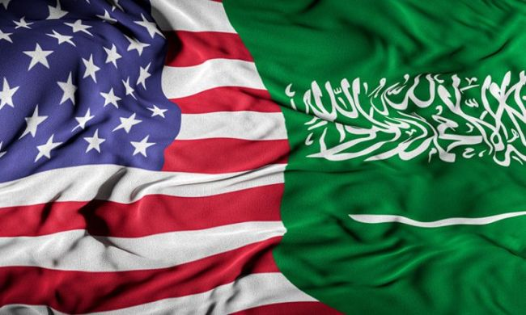
Две стратегии на нефтяном рынке
В 1973 году арабские члены ОПЕК (включая Саудовскую Аравию) объявили нефтяное эмбарго против Запада. Советский Союз, будучи крупным экспортёром нефти, выиграл от роста цен — золотовалютные резервы пополнились. Однако уже в 1980-е годы Саудовская Аравия сыграла ключевую роль в противоположном направлении: по некоторым данным, Эр-Рияд по согласованию с Вашингтоном резко увеличил добычу нефти в 1985–1986 годах, обрушив мировые цены. Для экономики СССР, зависевшей от нефти, это стало одним из факторов экономического кризиса конца 1980-х.
Финансирование афганских моджахедов
После советского вторжения в Афганистан в декабре 1979 года Саудовская Аравия стала главным финансовым спонсором афганского сопротивления. По различным оценкам, в течение 1980-х годов Эр-Рияд выделил на поддержку моджахедов от 3 до 4 миллиардов долларов — сумма, сопоставимая с вкладом США. Саудовское финансирование шло прежде всего через ISI — пакистанскую разведку. Это был самый болезненный удар Саудовской Аравии по советским интересам в холодной войне. Именно саудовские нефтедоллары в сочетании с американским оружием и пакистанской логистикой позволили затянуть войну на десять лет, что в итоге привело к истощению советской армии и её выводу из Афганистана в 1988–1989 годах.
Религия и СССР
Власти СССР запрещали своим гражданам совершать хадж (паломничество, связанное с посещением Мекки). Только в 1990 году первые 750 советских паломников были отправлены в Саудовскую Аравию, причем это мероприятие освещалось в советских СМИ.
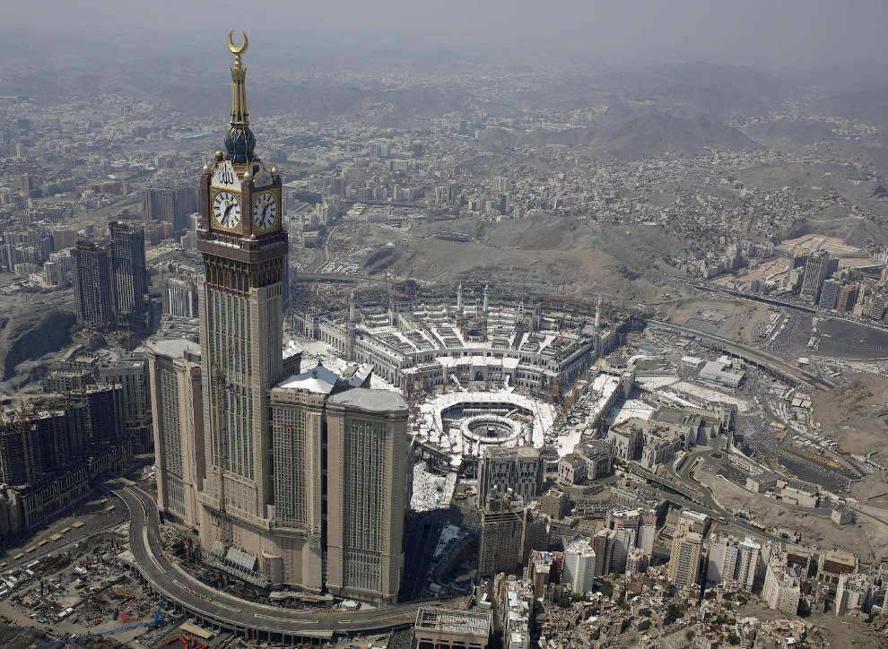
Кувейтский кризис как точка примирения
Парадоксально, но именно иракское вторжение в Кувейт 2 августа 1990 года дало толчок к нормализации советско-саудовских отношений. Обе страны осудили агрессию Ирака и поддержали резолюции ООН. 17 сентября 1990 года — впервые за 52 года — СССР и Саудовская Аравия восстановили дипломатические отношения. Для Горбачёва это был элемент интеграции в западную систему. Полноценных дипломатических и экономических отношений до распада СССР в декабре 1991 года установить уже не успели.
СССР и Иран:
Угроза у южных границ
Иран — единственная страна Ближнего Востока, непосредственно граничащая с СССР. История их отношений — это чередование оккупаций и договоров, шпионажа и торговли, революций и войн. Ни союзником, ни просто соседом Иран для СССР так и не стал.
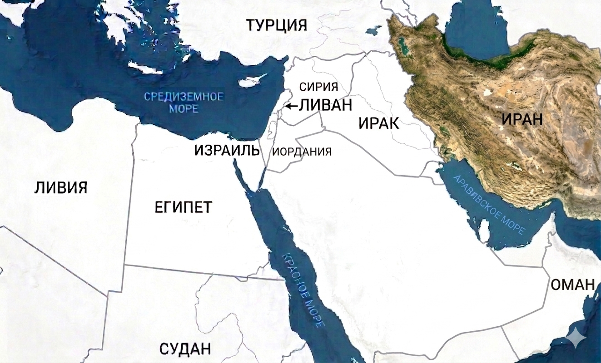
1921: Договор о дружбе
26 февраля 1921 года РСФСР и Персия подписали Советско-персидский договор о дружбе. Советская сторона отказалась от всех привилегий и концессий царской России, аннулировала долги и вернула имущество. В обмен Иран обязался не допускать на свою территорию третьих стран, враждебных России. Договор содержал важную статью 6, дававшую СССР право ввести войска в Иран, если его территория используется для угрозы советским интересам — эта статья будет применена в 1941 году.
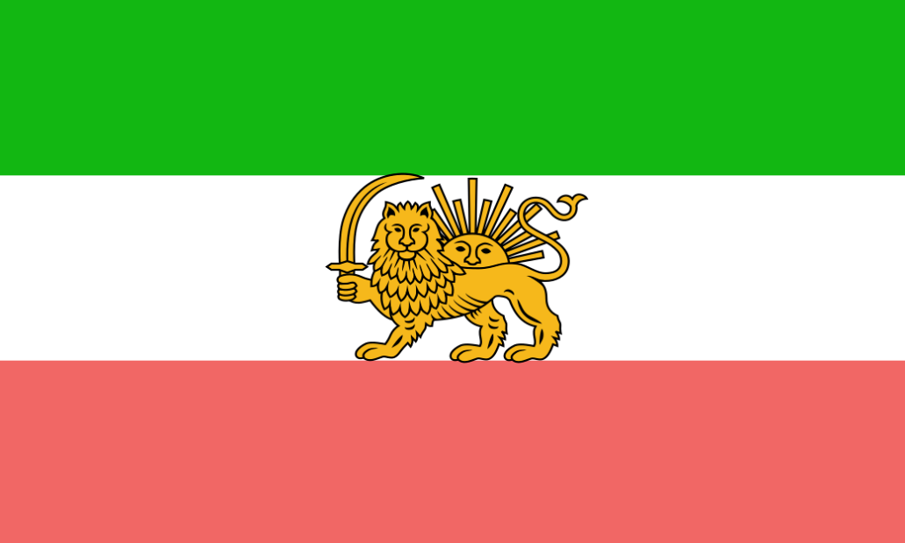
1941–1946: Советская оккупация севера Ирана
В августе 1941 года СССР (совместно с Великобританией) ввёл войска в Иран — официально для предотвращения прогерманской ориентации шаха Реза Пехлеви. Советские войска заняли северные провинции: Азербайджан и Гилян. После войны Лондон и Вашингтон вывели свои войска, но Москва медлила. В 1945–1946 годах СССР поддержал создание двух просоветских автономий — Азербайджанской народной республики и Курдской Мехабадской республики. Под американским и британским давлением советские войска в мае 1946 года всё же ушли; обе автономии были разгромлены иранской армией. Этот эпизод надолго отравил советско-иранские отношения.
Операция ЦРУ и западный выбор
В 1951–1953 годах иранский премьер-министр Мохаммед Мосаддык национализировал нефтяную промышленность. В августе 1953 года ЦРУ и МИ-6 организовали переворот («Операция Аякс»), в результате которой они свергли Мосаддыка и восстановили власть шаха Мохаммада Реза Пехлеви. СССР осудил переворот. Шах вступил в СЕНТО (Багдадский пакт) в 1955 году. Иран превратился в ключевой американский форпост у советских границ. На севере страны США разместили станции радиоэлектронной разведки, следившие за советскими ракетными испытаниями. Советско-иранские отношения формально существовали (товарооборот, газопровод «Аджикабул — Астара — Абадан», построенный в 1970 году), но стратегически Иран был против СССР.
Ограниченное экономическое сотрудничество
Несмотря на политическую враждебность, обе страны умели торговать. В 1966 году подписано советско-иранское соглашение об экономическом сотрудничестве. СССР построил в Иране ряд промышленных объектов: металлургический комбинат в Исфахане (введён в строй в 1973 году), машиностроительные предприятия, участвовал в строительстве плотины Арас на советско-иранской границе. В 1970 году заработал газопровод, по которому иранский природный газ поставлялся в Советский Азербайджан и Армению. Прагматизм брал верх над идеологией там, где это было взаимовыгодно.
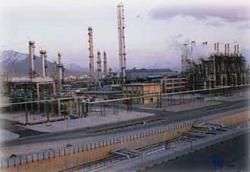
Американские базы у советских границ
Для СССР шахский Иран был прежде всего угрозой безопасности: американские базы SIGINT (радиоэлектронная разведка) в Иране позволяли перехватывать переговоры советских военных и отслеживать испытания ракет на Байконуре и Капустином Яре. КГБ вёл активную разведку в Иране. САВАК (иранская тайная полиция) при помощи ЦРУ охотилась на советских агентов. Иранская граница была одним из самых напряжённых участков «железного занавеса».
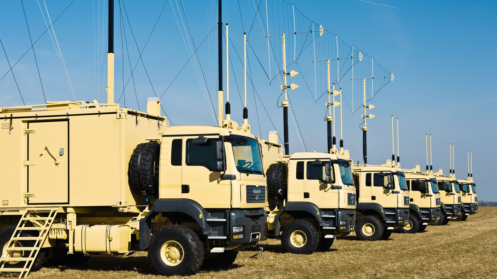
Революция 1979 года: надежды и разочарование
Когда в феврале 1979 года аятолла Хомейни сверг шаха, первоначальная реакция Москвы была осторожно-оптимистичной. Иран вышел из СЕНТО, американские базы были закрыты, посольство США захвачено. Казалось, стратегический баланс меняется. Однако Хомейни провозгласил принцип «Ни Востока, ни Запада» — отвергая оба лагеря холодной войны. Иранские коммунисты (партия «Туде»), первоначально поддержавшие революцию, были разгромлены к 1983 году: тысячи арестованы, расстреляны или бежали в СССР. Советское вторжение в Афганистан в декабре 1979 года окончательно испортило отношения: Иран осудил его и поддержал афганских моджахедов.
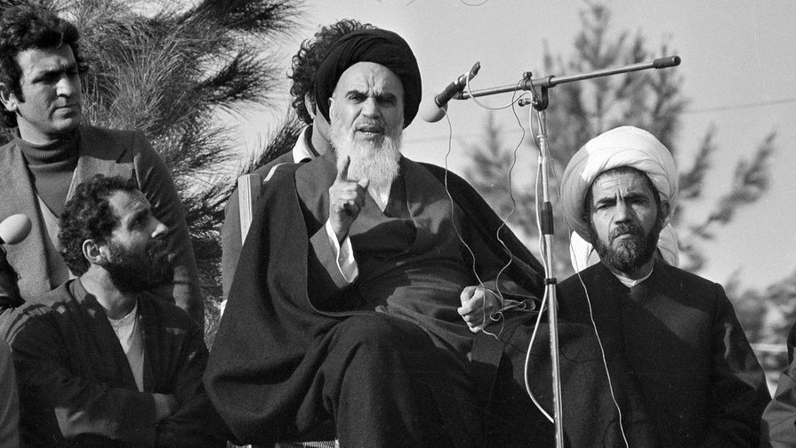
Ирано-иракская война (1980–1988)
Когда в сентябре 1980 года Ирак напал на Иран, СССР оказался в сложнейшем положении: Ирак был союзником по договору 1972 года, Иран — соседом, с которым необходимо было поддерживать хоть какие-то отношения. Официально провозгласив нейтралитет, Москва продолжала снабжать Ирак оружием. Ирану советское оружие не поставлялось напрямую, но поступало через Сирию и Ливию. Восьмилетняя война унесла более миллиона жизней.
Конец холодной войны: осторожное сближение
К 1989–1991 годам, с ослаблением СССР и окончанием ирано-иракской войны, отношения начали нормализоваться. В июне 1989 года президент Ирана Али Акбар Хашеми-Рафсанджани посетил Москву — первый высокий иранский визит с 1979 года. Стороны подписали соглашение о военно-техническом сотрудничестве (его реализация началась уже при России). Иран соглашался покупать советское оружие; СССР видел в этом и экономическую выгоду, и геополитический противовес американскому влиянию в Персидском Заливе.
СССР и Йемен:
советский форпост на Аравийском полуострове
Народная Демократическая Республика Йемен (Южный Йемен) стала единственным государством Аравийского полуострова, объявившим себя социалистическим. Это был самый близкий советский союзник в регионе — «маленькая Куба» у Аденского залива. Северный Йемен придерживался иного курса.
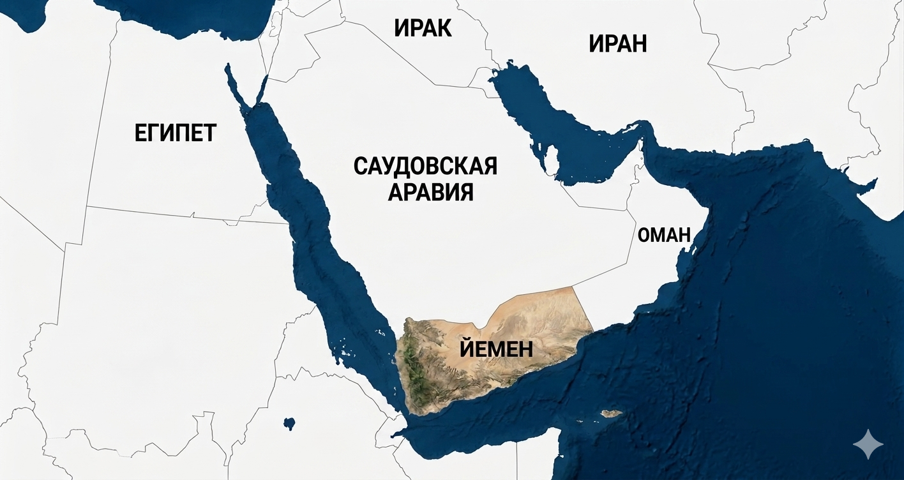
Северный Йемен: осторожное сотрудничество
Йеменское Мутаваккилийское королевство установило дипломатические отношения с СССР в 1928 году. После революции 1962 года, свергнувшей монархию, в стране началась гражданская война: республиканцев поддерживал Египет (и через него — СССР), монархистов — Саудовская Аравия. В 1967 году СССР признал Йеменскую Арабскую Республику. Отношения были стабильными, но ограниченными: ЙАР балансировала между СССР, США и Саудовской Аравией.
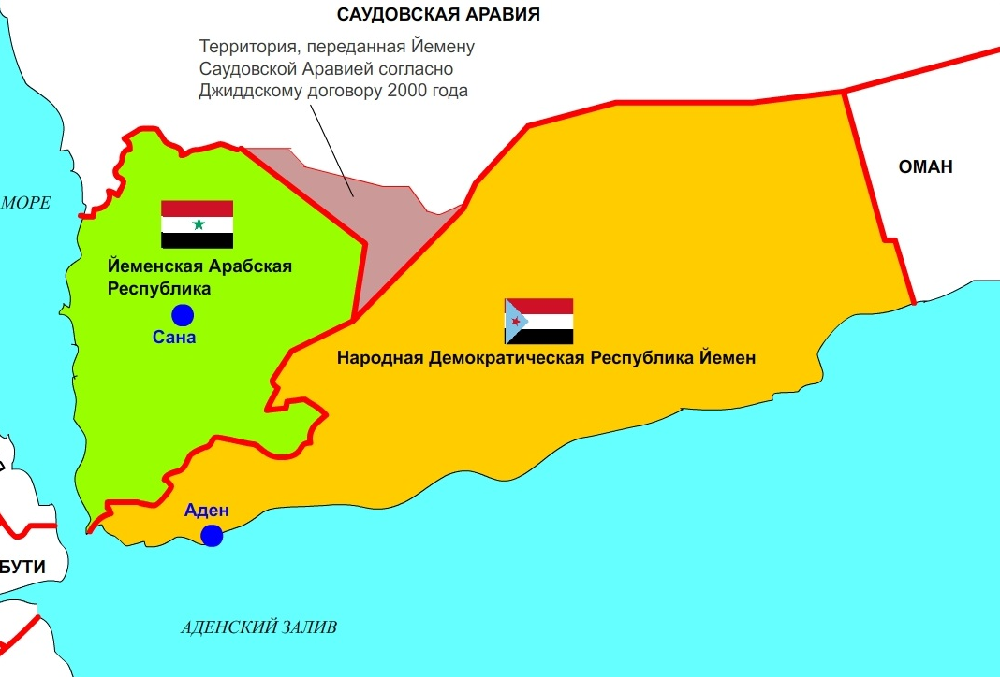
Южный Йемен: путь к социализму
30 ноября 1967 года Великобритания вывела войска из Адена, и была провозглашена независимость Народной Республики Южного Йемена (с 1970 года — НДРЙ). Новая власть — Национальный фронт освобождения — взяла радикальный левый курс: национализации, аграрная реформа, провозглашение марксизма-ленинизма государственной идеологией. СССР немедленно признал НДРЙ и начал масштабную помощь. Это был уникальный случай: социалистическое государство на Аравийском полуострове.
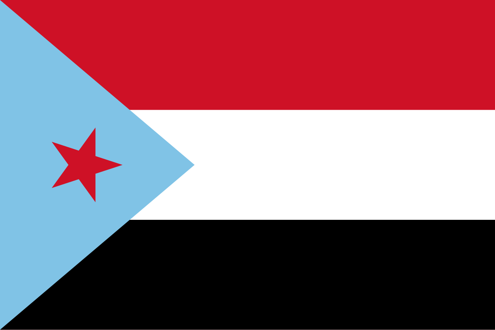
Стратегическое значение Адена
Порт Аден занимал исключительно выгодное стратегическое положение: на пересечении путей из Красного моря в Индийский океан, в 30 км от пролива Баб-эль-Мандеб — «ворот» между Суэцем и Азией. Советский ВМФ получил доступ к аденской базе: корабли Тихоокеанского и Черноморского флотов могли пополнять запасы и проходить ремонт. На пике советского присутствия (середина 1980-х) в Южном Йемене находилось около 1 500–2 000 советских военных и гражданских специалистов. Советская военно-морская разведка вела наблюдение за движением западных кораблей через Баб-эль-Мандеб.
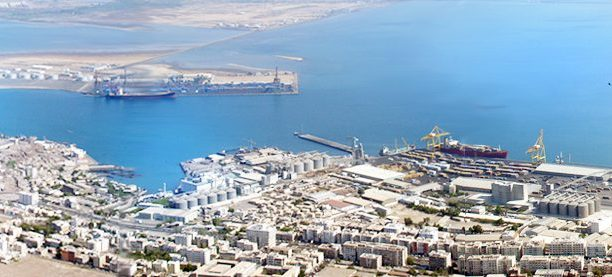
Договор о дружбе 1979 года
25 октября 1979 года СССР и НДРЙ подписали Договор о дружбе и сотрудничестве сроком на 20 лет. Южный Йемен стал одним из немногих государств мира, подписавших такой договор с Москвой. Он предусматривал советские гарантии безопасности, военную помощь и экономическое сотрудничество. Аденский режим получил от СССР около 1,5–2 млрд долларов помощи за весь период существования.
Экономическая помощь СССР
Советский Союз строил в Южном Йемене рыболовецкие базы, рыбоперерабатывающие заводы, школы и больницы, помогал наладить государственное управление. Сотни южнойеменских специалистов прошли обучение в СССР. Советская помощь была жизненно необходима режиму: собственная экономика НДРЙ была крайне слабой — нефть открыли лишь в конце 1980-х. Однако советские советники жаловались на неэффективность местного управления и постоянные внутрипартийные конфликты.
Гражданская война 1986 года
В январе 1986 года в Адене вспыхнула жестокая внутрипартийная война между фракциями правящей партии. За 12 дней боёв погибло несколько тысяч человек, включая большинство членов Политбюро. Советские граждане были эвакуированы военными кораблями. Москва была в растерянности: её союзник уничтожал сам себя. После этой катастрофы Южный Йемен так и не восстановился политически и экономически. Горбачёв начал сворачивать советское присутствие: содержать нестабильный режим становилось слишком дорого. В 1990 году Северный и Южный Йемен объединились — социалистический эксперимент на Аравийском полуострове завершился.
В разработке
Материалы готовятся